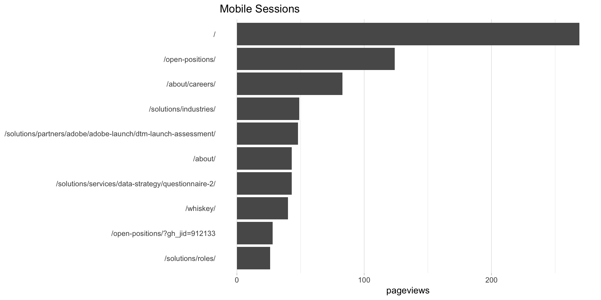
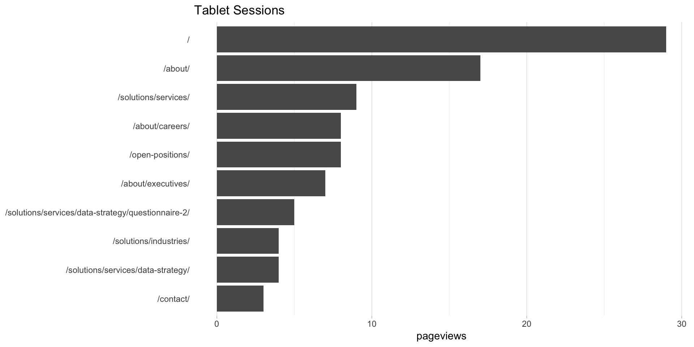
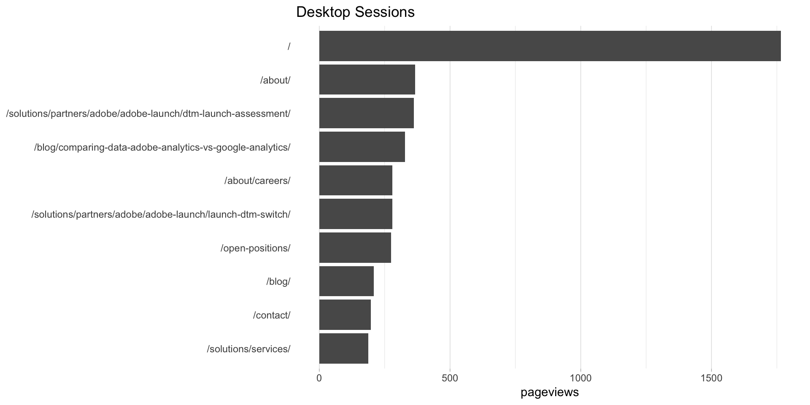

This example pulls three sets of data: the top 10 pages for the last thirty days on mobile, tablet, and desktop. This is, essentially, an extension of the Simple Dynamic Segment - v4 example except it uses a function to pull the data so that a list of values (“Mobile,” “Tablet”, and “Desktop”) can be processed to dynamically change the segment used to pull the data.
With the v4 API, dynamic segments are more powerful than v3, but (alas!) pretty basic segments can feel pretty convoluted. This example could also be built for v3, but we want to go forward! And, v4 is the future!
Be sure you’ve completed the steps on the Initial Setup page before running this code.
For the setup, we’re going to load a few libraries, load our specific Google Analytics credentials, and then authorize with Google.
# Load the necessary libraries. These libraries aren't all necessarily required for every
# example, but, for simplicity's sake, we're going ahead and including them in every example.
# The "typical" way to load these is simply with "library([package name])." But, the handy
# thing about using the approach below -- which uses the pacman package -- is that it will
# check that each package exists and actually install any that are missing before loading
# the package.
if (!require("pacman")) install.packages("pacman")
pacman::p_load(googleAnalyticsR, # How we actually get the Google Analytics data
tidyverse, # Includes dplyr, ggplot2, and others; very key!
devtools, # Generally handy
googleVis, # Useful for some of the visualizations
scales) # Useful for some number formatting in the visualizations
# Authorize GA. Depending on if you've done this already and a .ga-httr-oauth file has
# been saved or not, this may pop you over to a browser to authenticate.
ga_auth(token = ".ga-httr-oauth")
# Set the view ID and the date range. If you want to, you can swap out the Sys.getenv()
# call and just replace that with a hardcoded value for the view ID. And, the start
# and end date are currently set to choose the last 30 days, but those can be
# hardcoded as well.
view_id <- Sys.getenv("GA_VIEW_ID")
start_date <- Sys.Date() - 31 # 30 days back from yesterday
end_date <- Sys.Date() - 1 # YesterdayIf that all runs with just some messages but no errors, then you’re set for the next chunk of code: pulling the data.
There are two main aspects of the data pulling:
deviceCategory value as an argument and then constructs the segment accordinglymap()Both of these aspects are embodied in the code below, but we’re going to do a bit of exposition before we get to that.
This all gets built up in what can feel very cumbersome. Check out ?segment_ga4() for the documentation of how the segment gets built. Correctly, it describes this as a “hierarchy.” In practical terms, though, we build from the bottom up:
segment_element(). This is just a single conditional statement.segment_vector_simple(). There are a few options here, but we’re going to stick with the simple approach. And, it’s still going to feel redundant, because we’re only including a single segment element.segment_define(). This may feel like it’s the same as the previous step, but, if you think about the segment builder in the web interface, it will start to make sense – there are two levels at which can combine multiple “things” together to define a segment. Alas! Here, again, we’re just including a single segment vector, so it all feels really cumbersome.In addition to the “hierarchy” messiness for a simple segment, there is also some list() messiness. Note, for instance, how my_segment_vector in the example code includes a list within a list. Use this example (and other examples on this site) as well as the ?segment_ga4() documentation to troubleshoot.
As Mark Edmondson says, “If you’re going to use R effectively, you’re going to have to learn to love lists.” There are a couple of things to note about how we’re using lists in this code:
deviceCategory values. To get even more advanced, we could actually have one query that pulls all of the values for deviceCategory (or some other dimension) and then use the results of that category to get the list of values we actually want to process. Minds start to get blown at that point (but it’s a very practical application!).map() (which is from the purrr package in the Tidyverse) to call our function for each of those values. This will return a list of data frames – one data frame for each device category. We’ll then process that list for our data visualization(s)!Now…onto the code!
#############
# Create a function that takes in a device category value, builds a dynamic segment using that
# value, and then queries the data.
#############
get_data <- function(device_category){
# Build the segment name
my_segment_name <- paste(device_category,"Sessions")
# Create a segment element object. See ?segment_element() for details.
my_segment_element <- segment_element("deviceCategory",
operator = "EXACT",
type = "DIMENSION",
expressions = device_category) # The value passed to the function
# Create a segment vector that has just one element. See ?segment_vector_simple() for details. Note
# that the element is wrapped in a list(). This is how you would include multiple elements in the
# definition.
my_segment_vector <- segment_vector_simple(list(list(my_segment_element)))
# Define the segment with just the one segment vector in it. See ?segment_define() for details.
my_segment_definition <- segment_define(list(my_segment_vector))
# Create the actual segment object that we're going to use in the query. See ?segment_ga4()
# for details.
my_segment <- segment_ga4(my_segment_name, # We built this at the beginning of the function
session_segment = my_segment_definition)
# <whew>!!!
# We're only going to return the top 10 values, so we need to order the results in descending order.
# This *could* be defined outside the function, but, for readability, we're putting it here.
results_order <- order_type("pageviews",
sort_order = "DESCENDING",
orderType = "VALUE")
# Pull the data. See ?google_analytics_4() for additional parameters.
ga_data <- google_analytics(viewId = view_id,
date_range = c(start_date, end_date),
metrics = "pageviews",
dimensions = "pagePath",
order = results_order,
segments = my_segment,
max = 10)
# Go ahead and print to the console that this step has been completed. This is useful both
# for debugging, as well as to be able to track progress as the script is running.
cat("Completed pulling data for:", device_category, "\n")
# The function will return the last value set, so repeat ga_data to ensure that happens
ga_data
}
#############
# Put that function to use!
#############
# Define the list of values to be processed
device_categories <- c("Mobile", "Tablet", "Desktop")
# And then process it! It's an innocuous little line of code, but it's where the magic happens!
page_data <- map(device_categories, get_data)
# The above returns a list of three data frames -- one for each device category. For our data
# check, we'll just peek at the Mobile values
head(page_data$Mobile)We’re actually going to need to convert the pagePath values to factors so that each bar chart comes out in descending order. But, to save ourselves from too many list-processing functions, we’re going to do that at part of the data visualization.
This won’t be the prettiest bar chart, but let’s make three horizontal bar charts – one each for each of our three segments. We’re going to do some list work again. This time, we’ll write a function to perform the data visualization and then run that function for each element (data frame) in our our page_data list.
#########
# The function to do some moderate data munging and generate a visualization
#########
plot_data <- function(df){
# Convert the pagePath to be a factor so the bars will be ordered descending by pageviews
df$pagePath <- factor(df$pagePath,
levels = rev(df$pagePath))
# Grab the segment name to use as the title. It's the same value for every row, so just
# use the first row.
chart_title <- df$segment[1]
# Create the plot. Note the stat="identity"" (because the data is already aggregated) and
# the coord_flip(). And, I just can't stand it... added on the additional theme stuff to
# clean up the plot a bit more.
gg <- ggplot(df, mapping = aes(x = pagePath, y = pageviews)) +
geom_bar(stat = "identity") +
ggtitle(chart_title) +
coord_flip() +
theme_light() +
theme(panel.grid.major.y = element_blank(),
panel.grid.minor.y = element_blank(),
panel.border = element_blank(),
axis.title.y = element_blank(),
axis.ticks.y = element_blank())
# Output the plot. You *could* just remove the "gg <-" in the code above, but it's
# generally a best practice to create a plot object and then output it, rather than
# outputting it on the fly.
gg
}
#########
# Call the function for each element in page_data
#########
# The second round of magic!
final_charts <- map(page_data, plot_data)
# And then output the results. We could jump through a few more hoops to not have the ## stuff
# show up, but I think we've done enough for now. Don't you?
final_charts## [[1]]
##
## [[2]]
##
## [[3]]
There you have it! The magic of lists and functions applied to dynamic segments!
This site is a sub-site to dartistics.com